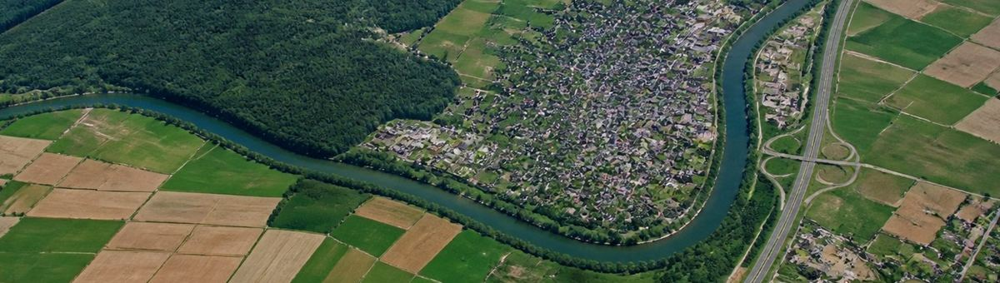
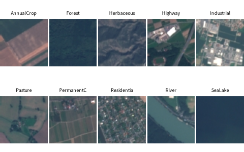

사진: AI 생성 이미지 · 프롬프트 공개Helber et al. (2019). 유럽우주국 Sentinel-2 위성 사진 64×64, 10종류 (밭 · 숲 · 풀밭 · 고속도로 · 산업 · 목초지 · 과수원 · 주거지 · 강 · 바다/호수). Hugging Face timm/eurosat-rgb 의 시험 묶음

| label | R | G | B |
|---|---|---|---|
| PermanentCrop | 65.2 | 83.6 | 85.8 |
| HerbaceousVegetation | 75.6 | 82.1 | 86.2 |
| SeaLake | 41.5 | 64.1 | 84.2 |
| SeaLake | 45 | 81.7 | 92.8 |
| Pasture | 54.1 | 84.7 | 83.6 |
| Forest | 36.4 | 66.1 | 71.9 |
| 열 | 종류 | 빈칸 | 고유값 수 | 범위 · 대표값 |
|---|---|---|---|---|
| label | 글자 · 범주 | 0 | 10 | 가장 흔한 값: River (11.4%) |
| R | 숫자 | 0 | 1995 | 22.84 ~ 246.8 (평균 87.11) |
| G | 숫자 | 0 | 1996 | 40.62 ~ 209.3 (평균 96.54) |
| B | 숫자 | 0 | 1996 | 58.04 ~ 204.5 (평균 103.7) |
숲은 어둡고 초록, 바다는 파랑, 고속도로 · 주거지는 회색
| ① 한 행 | 위성 사진 한 칸 (64×64) |
| ② 입력 X | 색 분포 (채널별 평균 · 히스토그램) |
| ③ 출력 y | 10가지 토지 종류 |
| ④ 평가지표 | 정확도 + 종류별 재현율 |
| ⑤ 기준선 | 가장 흔한 종류 |
문제를 정할 때 처음 채워 보는 칸들입니다. 여기서 끝이 아니라, 시험 데이터를 어떻게 나눌지 · 틀렸을 때 손해가 얼마인지 · 예측 시점에 정말 알 수 있는 값인지 같은 칸을 더 붙일수록 좋은 문제가 됩니다.
baseline (always Forest): accuracy 11.2% random forest on colors : accuracy 74.3%
누가, 왜, 어떻게 만든 데이터인지 직접 확인해 보세요.
프로젝트 주제를 고를 때 참고하세요 (일반적인 예시).